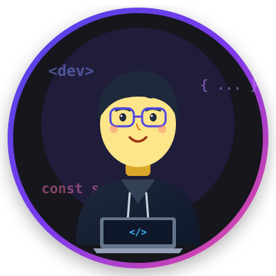

Srijan Halder
First-Year B.Tech Computer Science Student
BossCoder School of Technology (2026 – 2030)
Hello and welcome to my personal website. I am a 1st semester student learning the basics of computer science and web development. I enjoy writing code in C and Python, understanding how computers work, and building simple projects.
Email: onlinesrijanhalder@gmail.com | GitHub: github.com/Srijanhub

About Me
My name is Srijan Halder. I recently started my undergraduate studies in Computer Science and Engineering at BossCoder School of Technology.
In my first semester, I am focusing on building a solid understanding of programming fundamentals. We are currently studying C programming, engineering mathematics, and digital logic. Outside of class, I spend my time learning HTML and CSS, practicing problem solving, and exploring open-source projects on GitHub.
Current Focus
Mastering core programming concepts in C, learning data structures, and building web pages from scratch.
Academic Goals
Maintain consistent academic performance, complete weekly coding assignments, and build real-world software tools.
Areas of Interest
Web Development, Problem Solving, Software Tooling, and Open Source Collaboration.
Education
Bachelor of Technology (B.Tech) in Computer Science
Institution: BossCoder School of Technology
Duration: 2026 – 2030 (Currently in 1st Semester)
Key Coursework: Problem Solving & C Programming, Engineering Mathematics I, Digital Electronics, Basics of Web Development.
Higher Secondary Education (Class 12)
Stream: Science (Physics, Chemistry, Mathematics, Computer Science)
Duration: 2024 – 2026
Details: Studied computer science basics and participated in school science exhibitions.
Secondary School Examination (Class 10)
Duration: 2022 – 2024
Details: Completed general high school education with distinction in Mathematics and Science.
Skills
Here are the technical and non-technical skills I have practiced so far with my estimated level of confidence:
Technical Skills
| Skill | Self-Rating | Notes |
|---|---|---|
| HTML5 | 90% | Semantic page layout, forms, tables, headings |
| CSS3 | 80% | Styling, box model, margins, padding, simple responsive layouts |
| C Programming | 70% | Variables, loops, arrays, functions, pointers basics (College curriculum) |
| Python | 75% | Scripting, basic object-oriented programming, data structures |
| Git & GitHub | 75% | Repository creation, committing, pushing, branching, pull requests |
Soft Skills
| Skill | Rating | Description |
|---|---|---|
| Teamwork | 90% | Working with classmates on group assignments and hackathons |
| Communication | 85% | Explaining code clearly, asking questions, writing documentation |
| Problem Solving | 80% | Breaking down logic problems into small step-by-step solutions |
| Willingness to Learn | 95% | Eager to read documentation, accept feedback, and fix mistakes |
Projects
Actual projects and tools I have built and worked on:
1. ListingForge
Technologies: Node.js, Express, Open-Source AI models, REST APIs
A project built to help small independent online sellers generate product titles and tags from photos without paying high fees for commercial APIs.
2. Mandate — AI Spending Firewall (PayPal Hackathon)
Technologies: Python 3.11, FastAPI, PayPal Orders API, SQLite, Docker
Developed during the PayPal AI Hackathon with my teammate Vinay Khandia. A spending firewall designed to ensure autonomous AI shopping agents stay strictly within user-approved budget limits.
3. AtlasMinds Platform
Technologies: HTML, CSS, JavaScript
An educational platform backed by BossCoder for STEM and Python mentoring. I contributed to the page layout and curriculum information displays.
4. DayPilot Student Desk
Technologies: Python, macOS automation
A personal utility program created to keep track of daily BossCoder syllabus modules, log study hours, and help maintain focus during semester exam preparation.
5. Personal Portfolio Website
Technologies: Semantic HTML, Basic CSS
This website. Created as part of the Web Development Assignment 1 for BossCoder School of Technology. Contains all 11 required sections with minimal, clean code.
Open Source Exploration
Repositories I have forked and explored on GitHub to learn from production codebases:
- Netflix / hollow: Explored in-memory caching architecture. (My Fork)
- django / djangoproject.com: Looked at how the official Django community website is structured. (My Fork)
- psf / pyperf: Studied Python benchmarking tools and performance testing scripts. (My Fork)
- apache / shardingsphere: Looked through Apache's distributed database project repository. (My Fork)
Hobbies and Interests
Activities I enjoy in my free time outside of classes:
- Reading Tech Blogs: Reading developer articles on Dev.to and programming discussions on Reddit.
- Casual Photography: Taking photos of campus and nature on my phone.
- Chess: Playing 10-minute online rapid games on Chess.com with friends.
- Music: Listening to lo-fi and background music while studying or writing code.
- Table Tennis: Playing casual matches in the college common room with classmates.
Achievements
- 2026: PayPal AI Hackathon Participant (Mandate Team Project).
- 2026: Hacktoberfest Open Source Participant.
- 2026: Admitted to B.Tech Computer Science at BossCoder School of Technology.
- 2025: Inter-School Science & Coding Exhibition — 1st Runner Up.
Contact Me
If you have any advice for a first-year student or feedback on my work, please reach out:
Email: onlinesrijanhalder@gmail.com
GitHub: https://github.com/Srijanhub
LinkedIn: https://linkedin.com/in/srijanhalder
College: BossCoder School of Technology, Kolkata, India